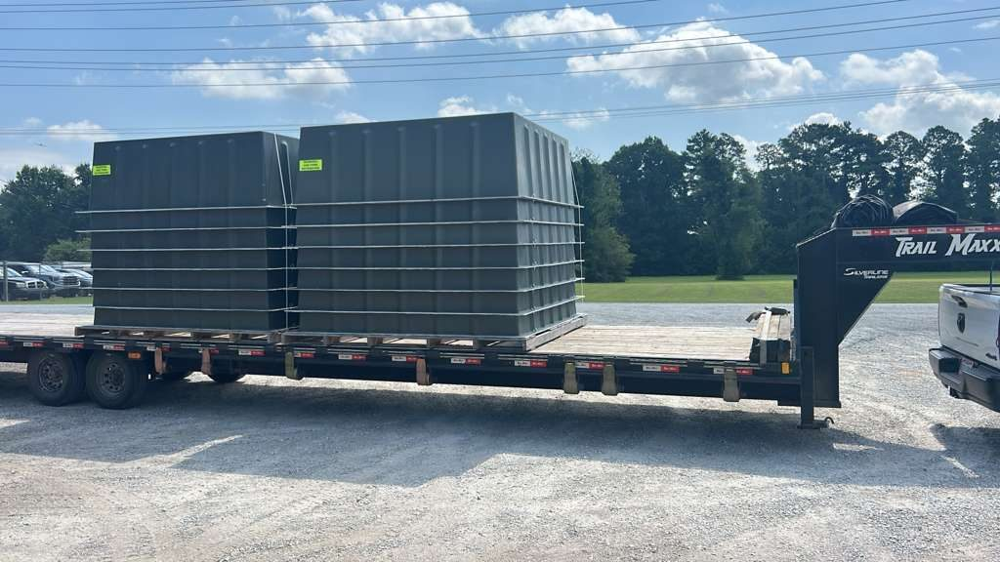

Texas issues oversize/overweight permits through the TxDMV (via the TxPROS system). A load is permitted once it exceeds 8'6" wide, 14' tall, ~65' long, or 80,000 lbs gross. Single-trip permits cover most moves; escorts kick in with width, height poles with over-height, and the biggest loads route as superloads with engineered review.
Texas moves more oversized freight than almost any state in the country — energy equipment, wind components, fabricated skids, construction iron — and its permitting reflects that. If your load is crossing Texas, here's what actually triggers a permit and how the state handles it.
What needs a permit in Texas
A load is legal in Texas up to 8'6" wide, 14' tall, 65' long, and 80,000 lbs gross. Note the height — Texas allows 14 feet, a foot more than the 13'6" you'll hit in most eastern states, which matters the moment your route crosses a state line. Exceed any of those and you're into a permit for every mile inside Texas.
- Oversize — over width, height, or length limits.
- Overweight — over 80,000 lbs gross, or over the axle and bridge-formula limits underneath it.

How permits are issued
Texas oversize/overweight permits run through the TxDMV and its online TxPROS system. Single-trip permits cover one specific load on one route and are the standard for a one-off oversized move. Carriers who run oversized freight regularly can hold annual/blanket permits within set dimension limits. The permit ties to your exact width, height, length, and weight — change the load and the permit has to change with it.
Escorts, height poles, and curfews
Escort requirements scale with the load. As a working rule in Texas: loads get a front or rear escort as width climbs past roughly 14 feet on most highways, with escorts front and rear for the widest loads, and a height-pole escort out front for anything over-height to check clearances before the load reaches them. Over-length loads pull escorts too. Travel is generally daylight-only for oversized loads, with curfews through major metros like Houston, Dallas–Fort Worth, San Antonio, and Austin during rush hours, and restrictions on some holidays.
Superloads
When a load exceeds the ceilings a routine permit covers — extreme width, height, or weight — Texas reviews it as a superload: engineered route analysis, bridge review, and sometimes utility coordination, with lead times measured in weeks, not hours. See what a superload is for the full picture.
The routes
Most Texas oversized freight runs the I-10, I-20, I-35, and I-45 corridors that connect the Gulf ports, the metros, and the Permian Basin. The permit specifies the approved route; a load that's legal-dimension can run any legal road, but anything over height or weight has to stick to the surveyed path around low bridges and weight-restricted structures.
Bottom line
- Texas legal limits: 8'6" wide, 14' tall, 65' long, 80,000 lbs gross — permits start past any of them.
- Permits issue through the TxDMV / TxPROS; single-trip covers most moves.
- Escorts scale with width; height poles for over-height; daylight-only with metro curfews.
- Extreme loads route as superloads with engineered review and long lead times.
We handle Texas DOT permitting, routing, and escorts as part of every oversized move we run through the state — see heavy haul transport or send your load and route for a fast quote.